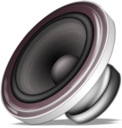

Music player server with a web-based user interface inspired by Amarok 1.4
Run it on a server connected to some speakers in your home or office. Guests can control the music player by connecting with a laptop, tablet, or smart phone. Further, you can stream your music library remotely.
Groove Basin works with your personal music library; not an external music service. Groove Basin will never support DRM content.
Live discussion in #libgroove on Freenode.
Check it out on GitHub
Features
-
Fast, responsive UI. It feels like a desktop app, not a web app.
-
Dynamic playlist mode which automatically queues random songs, favoring
songs that have not been queued recently.
-
Drag and drop upload. Drag and drop playlist editing. Rich keyboard
shortcuts.
-
Lazy multi-core
EBU R128 loudness scanning
(tags compatible with
ReplayGain)
and automatic switching between track and album mode.
"Loudness Zen
-
Streaming support. You can listen to your music library - or share it
with your friends - even when you are not physically near your home
speakers.
-
MPD protocol support. This means you already have a selection of
clients
which integrate with Groove Basin.
For example
MPDroid.
-
Last.fm scrobbling.
-
File system monitoring. Add songs anywhere inside your music directory
and
they instantly appear in your library in real time.
-
Supports GrooveBasin Protocol on the same port as MPD Protocol - use the
`protocolupgrade` command to upgrade.
Live Demo
Try out the live demo
Articles
My Quest to Build the Ultimate Music Player
Turn Your Raspberry Pi into a Music Player Server
Screenshots